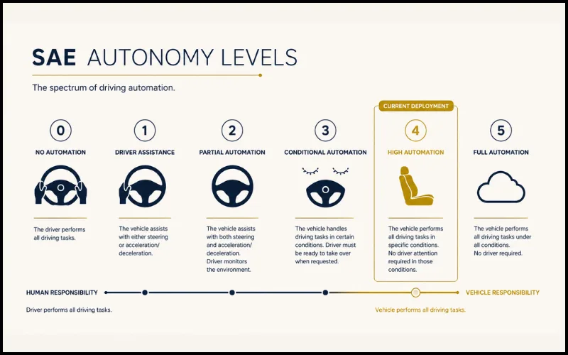

Self-driving cars are real. They are on public roads right now, carrying passengers, making decisions, navigating intersections — without a human behind the wheel. But the version of autonomous vehicles most people have in their heads — the one you buy at a dealership and sleep in on the motorway — does not exist yet. In 2026, the gap between what's deployed and what's dreamed of is still vast, and understanding it matters.
Self-driving cars in 2026 exist commercially as robotaxis — fully autonomous vehicles operating in defined cities with no human driver on board. Waymo leads globally with 2,500+ robotaxis across six US cities. However, no consumer car you can buy today drives itself without requiring human supervision. Most new vehicles are at Level 2 — hands-free on highways, but eyes still required. Level 4 consumer vehicles are expected to emerge in limited form by late 2026 to 2028. Level 5 — fully autonomous in all conditions — remains a decade or more away.
The confusion stems partly from how the technology is talked about. Every headline about a new "self-driving feature" or "autonomous capability" blurs together systems that are fundamentally different in what they require from the driver. A car that keeps you in your lane on the motorway and a car that drives itself through downtown without anyone onboard are not the same technology separated by a firmware update. They are separated by years of engineering, mapping, liability law, and regulatory approval.
1 The Levels Explained: What Do They Actually Mean?
The SAE autonomy framework defines six levels from 0 to 5. Understanding these is the single most important thing for cutting through the noise in this space.
Level 0 is a standard car with no automation. Level 1 adds isolated assistance — cruise control, automatic emergency braking, lane departure warnings. The human is fully in control at all times. Most cars on the road globally are at this level.
Level 2 is where most "advanced" consumer vehicles sit today — Ford BlueCruise, Tesla Autopilot, Mercedes Drive Pilot in some markets. The car can steer, accelerate, and brake simultaneously. But the driver must remain alert and watching at all times. Remove your eyes from the road and you are breaking the rules of the system, not taking advantage of it.
Level 3 allows the driver to genuinely look away from the road in specific, defined conditions. Mercedes-Benz received Level 3 certification in Germany and Nevada — the first commercially approved Level 3 system. But the driver must respond within seconds when the car requests a handover. This level also introduces a complex liability shift — if the car is driving and something goes wrong, who is responsible?
Level 4 vehicles drive themselves completely within a specific operational domain — a geofenced city area, a defined weather range, a mapped route network. No human is required on board. If the system reaches its limits, it pulls over safely on its own rather than demanding a handover. This is where Waymo and Zoox robotaxis operate today.
Level 5 means a vehicle that drives itself anywhere, in any weather, on any road — no operational design domain restrictions. This level does not exist commercially and is unlikely within the next decade by most engineering assessments. The edge cases at Level 5 are extraordinarily difficult: unmapped rural roads, extreme weather, novel traffic scenarios, ethical decision-making in unavoidable accident situations.
The jump from Level 2 to Level 4 is not incremental — it is a fundamental shift in who bears legal and operational responsibility for the vehicle. That shift requires not just engineering advances, but regulatory frameworks, insurance models, and liability laws that most countries are still building.
2 Where We Actually Are in 2026
The honest picture: Level 2 is mainstream. Level 3 is arriving cautiously in limited markets. Level 4 is deployed commercially in robotaxis but not yet in private ownership. Level 5 remains theoretical.

The most significant shift in 2026 is the acceleration of Level 2+ systems across mass-market vehicles. Ford's BlueCruise, GM's Super Cruise, and equivalents from Toyota, Hyundai, and BMW are now standard or affordable options across a much wider price range than three years ago. The hands-free highway experience has genuinely normalised for tens of millions of drivers.
Level 2+ reality check: Even the most capable Level 2+ systems — including Tesla's Full Self-Driving — still require the driver to be alert and ready to intervene. They are sophisticated driver assistance tools, not autonomous vehicles. The naming across the industry has been consistently misleading.
Europe is approaching the transition differently. Regulatory frameworks there are more cautious, and Level 3 certification has been granted only in very specific conditions — motorway driving below 60 km/h in traffic jams in Germany. The EU is still debating the liability frameworks needed for broader Level 3 and 4 deployment. Full Level 4 consumer vehicles are not expected in most European markets before 2027 at the earliest.
3 Who Is Leading the Race — and How?
The autonomous vehicle landscape has consolidated significantly since the boom years of 2017–2020. Several well-funded startups have folded. The survivors have taken very different approaches.
Waymo operates the world's largest commercial Level 4 robotaxi fleet — around 2,500 vehicles across San Francisco, Los Angeles, Phoenix, Austin, Atlanta, and Miami, targeting 20 cities by end of 2026. Waymo's published safety data shows significantly fewer injury-causing incidents per mile than human drivers in comparable urban conditions. Their approach: exhaustive real-world testing, high-resolution sensor suites including LiDAR, and extremely conservative operational domain expansion. Slow, methodical, and so far the most credible.
Tesla's Cybercab is the most radical approach in the consumer space — a two-passenger vehicle designed from scratch with no steering wheel, no pedals, and no manual override. Tesla's bet is that camera-based AI trained on vast real-world data can achieve Level 4 without the expensive LiDAR and HD mapping infrastructure that Waymo depends on. It is also designed as a dual-use platform: personal vehicle and robotaxi when not in use. The Cybercab represents either a genuine shortcut to mass-market autonomy or an enormous regulatory and safety risk — the answer will emerge through deployment.
Nvidia has repositioned itself as the intelligence layer behind autonomous driving rather than building vehicles. Their DRIVE platform provides the AI compute and software stack that multiple robotaxi companies are building on. This is the same strategy that made Nvidia dominant in AI data centres — sell the infrastructure that every competitor needs, regardless of who wins the application layer. Jensen Huang announced at CES 2026 that Nvidia will not build its own car, cementing this approach.
Rivian is building what its engineering team describes as "the most powerful combination of sensors and inference compute in consumer vehicles in North America" — the Gen 3 autonomy hardware launching on R2 models in late 2026. It includes LiDAR and Rivian's first in-house autonomy chip (RAP1). This would make Rivian one of the first manufacturers to bring genuine Level 4 hardware — not just software capability — to a consumer-purchasable vehicle.
"The physical and software infrastructure for autonomy is being built right now. The question is not whether it will work — it already does in constrained environments. The question is how fast the operational domain expands."
— Ali Kani, Vice President Automotive, Nvidia · Euronews, January 2026
4 The Real Gaps That Remain
The technology works — in specific, well-defined conditions. What remains unsolved is everything outside those conditions, and those edge cases are harder than they look.
Autonomous systems are trained on vast datasets of "normal" driving scenarios. They perform excellently on those. The challenge is the long tail of unusual situations: an emergency vehicle approaching from an unexpected direction, a construction worker waving cars through a red light, a child chasing a ball into the road from behind a parked truck. These are rare individually but collectively happen constantly across a large fleet. Handling them requires something closer to genuine situational reasoning, not pattern recognition.
The liability gap: When a Level 3 or Level 4 vehicle is involved in a crash, existing legal frameworks in most countries do not clearly assign liability. Is it the manufacturer, the software provider, the mapping company, the owner? Resolving this is as much a legal and insurance challenge as it is a technical one — and it differs significantly between jurisdictions.
Weather and infrastructure dependency: Most Level 4 systems depend on high-resolution HD maps that must be kept continuously updated. In heavy rain, snow, or construction zones where road markings are obscured, performance degrades. Waymo's operational area in Phoenix (sunny, flat, well-mapped) is not the same engineering challenge as operating in Edinburgh in November.
Cost: A fully equipped Level 4 sensor suite — LiDAR, multiple radar units, high-resolution cameras, compute hardware — still adds tens of thousands of dollars to a vehicle's cost. Bringing this to mass-market price points requires either cost reductions in sensor hardware (happening, but slowly) or a software-only approach that eliminates expensive sensors (Tesla's bet, unproven at scale).
5 What Could Change Everything
Three developments have the potential to meaningfully accelerate the timeline beyond current projections.
Traditional autonomous systems use a modular architecture: perception → prediction → planning → control, each handled by separate software components. End-to-end AI systems — trained directly from raw sensor inputs to driving outputs — are showing dramatic improvements in handling novel situations. Tier IV demonstrated this at CES 2026 with a system that handles scenarios its training data never explicitly included. If this approach scales reliably, it could sidestep the edge case problem that plagues modular systems.
Autonomous vehicle regulation in the US has been state-by-state and slow. But Waymo's safety record — publicly available and statistically meaningful after billions of autonomous miles — is building a regulatory evidence base that did not exist three years ago. If federal-level AV legislation passes in the US in 2026–2027, it could unlock deployment at a scale that accelerates both commercial fleets and consumer vehicle pathways simultaneously. Europe is watching closely.
LiDAR — the laser-based ranging sensor that gives autonomous vehicles precise 3D awareness — cost over $75,000 per unit in 2017. It now costs under $1,000 in volume. The next threshold that matters is sub-$500 at scale, which multiple sensor manufacturers are targeting for 2027–2028. At that price point, including LiDAR in a $30,000 vehicle becomes commercially viable, removing the most expensive barrier to mass-market Level 4 hardware.
The Bigger Picture: What This Actually Means
Self-driving technology is not failing. It is succeeding — carefully, incrementally, in places where the conditions make success achievable. Waymo's robotaxis are genuinely safer than human drivers in their operational domains. Tesla is making a bold bet on a software-first path to mass-market autonomy. Nvidia is quietly becoming the backbone of an entire industry.
What is failing is the public narrative — the decade of "five years away" promises that set expectations no technology could meet. The reality is more interesting than the hype. We are watching a genuinely difficult engineering and regulatory challenge being solved, level by level, city by city, edge case by edge case. The car that drives itself everywhere, in any weather, without any restrictions — that vehicle does not exist yet. But the car that drives itself reliably in a growing list of places, serving millions of passengers, demonstrably reducing certain types of crashes — that vehicle is already operating. Stay curious: the story is still being written, and the next few years are the most consequential chapters.
As of 2026, no consumer car on the market drives itself fully without human supervision. Most new vehicles offer Level 2 driver assistance — hands-free on mapped highways, but eyes must stay on the road. Level 4 autonomy (no human needed in defined areas) exists in commercial robotaxis from companies like Waymo, but is not yet available as a personal vehicle you can purchase off a dealership lot.
Level 2 means the car can steer and accelerate on its own, but the driver must remain alert and watching at all times — hands-free, but not eyes-free. Level 3 means the car handles all driving in specific conditions and the driver can briefly look away, but must be ready to take over when the system requests it. Level 4 means the car drives itself completely within a defined area or set of conditions, with no human intervention required even if something goes wrong.
Waymo is the global leader in deployed Level 4 autonomy, operating around 2,500 robotaxis across six US cities with a target of 20 cities by end of 2026. Tesla is pursuing a different path with the Cybercab — a Level 4 vehicle with no steering wheel or pedals, designed for both personal ownership and robotaxi use. Nvidia is supplying the AI software platform that multiple robotaxi companies are building on. Rivian and others are racing to bring Level 4 hardware to consumer EVs by late 2026.
Waymo's published safety data suggests its robotaxis are involved in significantly fewer injury-causing crashes per mile than human drivers in comparable urban environments. However, self-driving systems have known limitations — they can struggle in heavy rain, construction zones, unusual road markings, and situations not well-represented in their training data. The technology is demonstrably safer in certain controlled conditions but not universally superior to human driving in every scenario.
Level 5 autonomy — where a car can drive itself anywhere, in any weather, without any constraints — is unlikely in the next decade according to most experts. Level 4 autonomy in specific operational areas is already deployed in US cities and will expand through 2026–2028. Consumer-owned Level 4 vehicles are expected to emerge in limited form by late 2026 to 2028 in the US, with broader global availability depending heavily on local regulation and infrastructure.